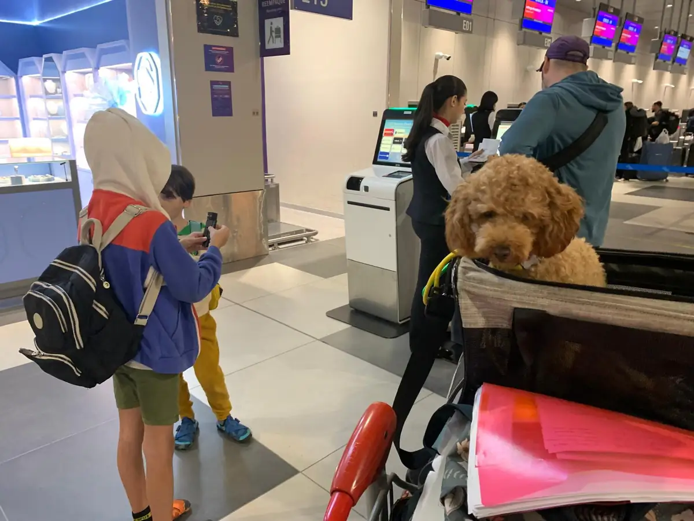
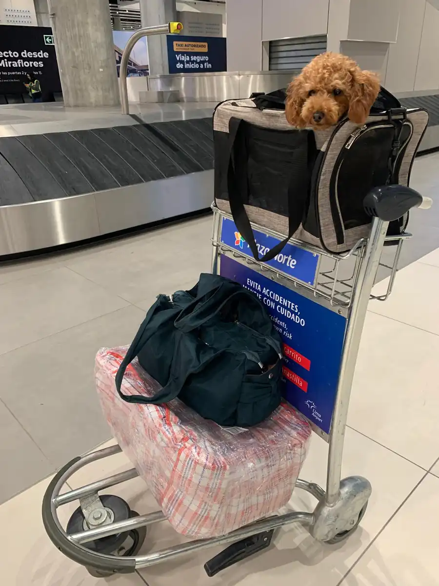
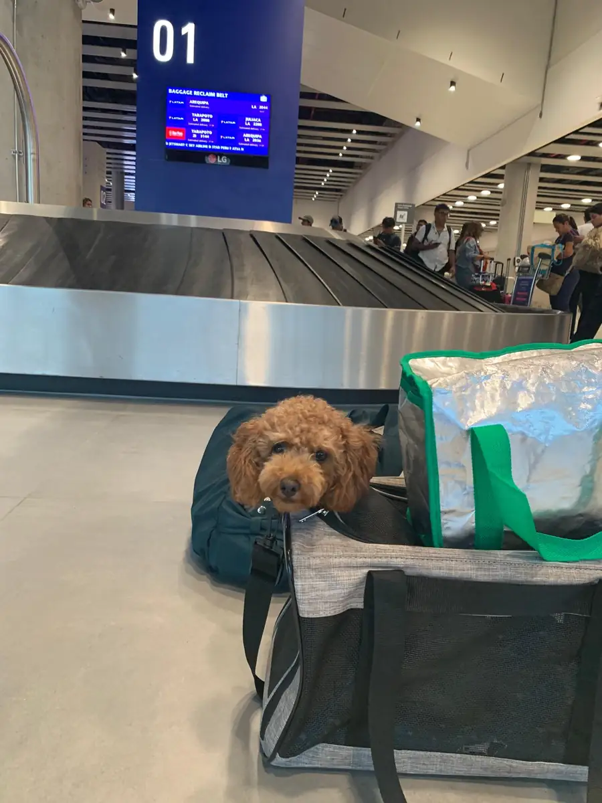
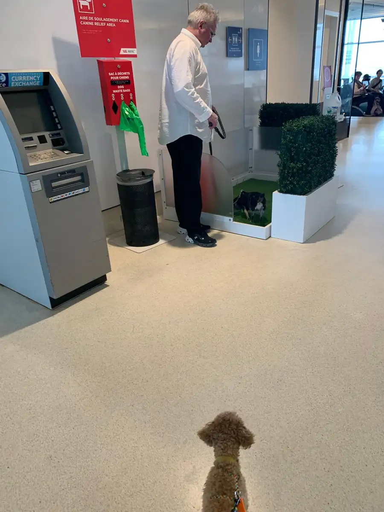
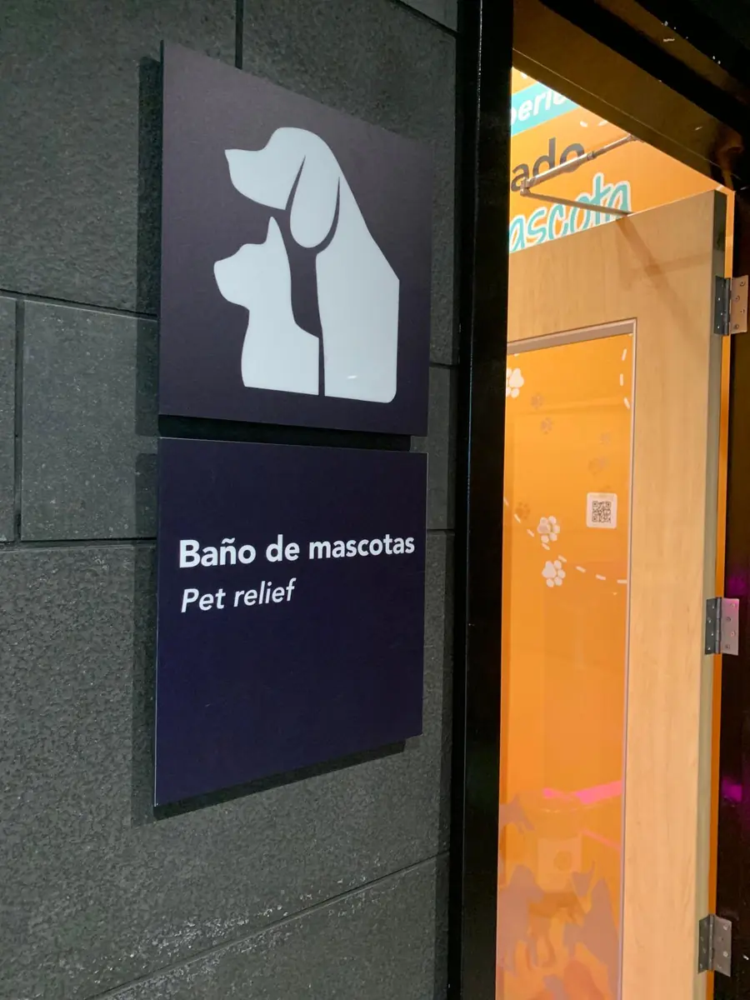
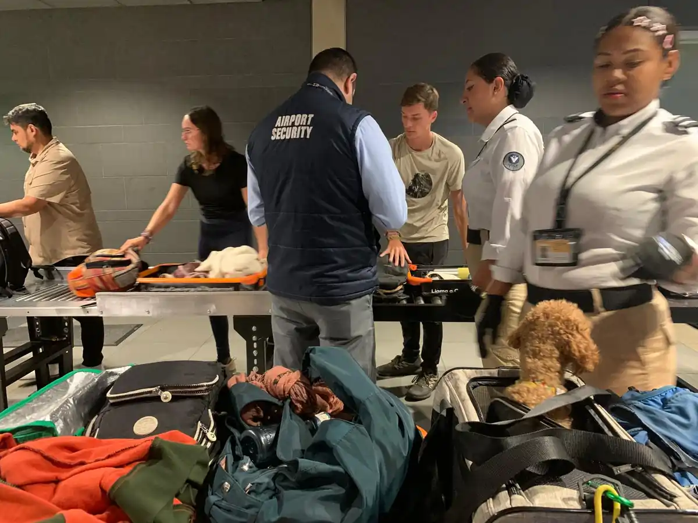

Información clave
¿Qué es la serología antirrábica y por qué la exigen?
La serología antirrábica —también llamada RNATT (Rabies Neutralizing Antibody Titration Test) o prueba FAVN— es un análisis de sangre que mide el nivel de anticuerpos protectores contra la rabia en tu perro o gato. El resultado se expresa en UI/mL (unidades internacionales por mililitro).
Para que tu mascota pueda ingresar a la Unión Europea, España, Italia, Francia, Alemania, Japón, Australia y otros países libres de rabia, el resultado debe ser igual o superior a 0,5 UI/mL. Sin este requisito cumplido, la mascota puede ser retenida en el aeropuerto de destino o sometida a cuarentena obligatoria —a veces por meses y a costo elevado.
En Zoovet Travel gestionamos el protocolo completo: desde la evaluación del cronograma vacunal previo, hasta la extracción de muestra, el envío al laboratorio KSVDL de Kansas State University (acreditado por OIE/WOAH), la interpretación del resultado y la integración con la documentación SENASA.
Nuestro protocolo de preparación previa optimiza el cronograma vacunal para maximizar la respuesta inmune antes de la toma de muestra.
Protocolo validado y documentado.
Aplicamos la metodología RNATT/FAVN con el laboratorio acreditado KSVDL de Kansas State University, reconocido por la OIE/WOAH.
Ver protocolo FAVN completo →


Paso a paso
El proceso de serología antirrábica desde Perú
Evaluación inicial por WhatsApp
Nos envías los datos de tu mascota (especie, raza, edad, país de destino, fecha del viaje) y verificamos el estado vacunal actual. Definimos el cronograma exacto para que llegues al viaje con todo en regla. Sin costo, respuesta inmediata.
Microchip ISO + vacuna antirrábica válida
Tu perro o gato debe tener microchip ISO 11784/11785 colocado antes de la vacunación. Verificamos o realizamos la vacunación antirrábica con vacuna exportable registrada. A partir de aquí empieza el conteo de 30 días obligatorio antes de la extracción de muestra.
Extracción de muestra y envío a KSVDL
En nuestra clínica de Trujillo extraemos la muestra de suero y la enviamos al Rabies Laboratory de Kansas State University (KSVDL), laboratorio acreditado por la OIE/WOAH cuyos resultados son aceptados en todos los países que exigen el título antirrábico. El resultado llega en 7–14 días hábiles.
Resultado, documentación y espera reglamentaria
Si el título es ≥ 0,5 UI/mL el resultado es válido. Integramos el certificado en el expediente documental de exportación junto con el certificado zoosanitario SENASA. Para destinos UE, la normativa exige esperar 3 meses adicionales desde la fecha del resultado antes del viaje. Todo el seguimiento lo realizamos contigo paso a paso.



Perros y Gatos
La serología aplica para perros y también para gatos
Perros
Todas las razas y tamaños. Evaluamos el estado vacunal previo, realizamos la extracción de muestra y gestionamos el resultado. Para razas braquicéfalas (Bulldog, Pug, Shih Tzu, etc.) realizamos evaluación BOAS adicional para determinar la aptitud al vuelo.
Gatos
El protocolo RNATT/FAVN aplica exactamente igual para felinos. Muchos propietarios desconocen que la serología también es obligatoria para gatos en España, Francia, Italia y Alemania. Gestionamos el protocolo completo para gatos desde Trujillo.
Miles de mascotas exportadas hacia todos los continentes.
Con más de 12 años de experiencia y miles de exportaciones certificadas a España, Italia, Estados Unidos, Alemania, Francia, Japón y Australia, somos la referencia en serología antirrábica y exportación de mascotas en el norte del Perú.
Equipo médico veterinario
Los especialistas que gestionan tu protocolo
MVZ Jessica Camacho
Responsable Protocolo RNATT/FAVN
- · CMVP Colegiatura Nº 12434
- · Médico Veterinario — UPAO Trujillo
- · ORCID 0009-0002-6837-5311
- · Perfil Wikidata Q138881218
- · Especialidad: FAVN · RNATT · Exportación internacional
MV Víctor Camacho
Especialista en Rabia Urbana
- · CMVP Colegiatura Nº 3103
- · Médico Veterinario — UNC Cajamarca
- · Afiliación: GERESA La Libertad · MINSA Perú
- · Especialidad: rabia urbana · epidemiología · vigilancia sanitaria
Preguntas frecuentes
Todo lo que necesitas saber sobre la serología antirrábica
¿Qué es la serología antirrábica y para qué sirve cuando viajo con mi mascota?
La serología antirrábica (RNATT) es una prueba de sangre que mide los anticuerpos protectores contra la rabia de tu perro o gato. Muchos países exigen un título igual o superior a 0,5 UI/mL antes de autorizar la entrada de la mascota. Sin ese resultado aprobado, tu mascota puede ser retenida o sometida a cuarentena en el aeropuerto de destino. Es uno de los requisitos más críticos del proceso de exportación internacional de mascotas desde Perú.
¿Qué países exigen la serología antirrábica para mi perro o gato?
La exigen como requisito obligatorio: todos los países de la Unión Europea (España, Italia, Francia, Alemania, Países Bajos, etc.), Reino Unido, Japón, Australia, Nueva Zelanda y otros países con estatus libre de rabia. En Zoovet Travel trabajamos con KSVDL de Kansas State University, laboratorio acreditado por la OIE/WOAH, cuyos resultados son aceptados en todos estos destinos.
¿Cuánto tiempo tarda el proceso completo de serología antirrábica desde Perú?
El proceso mínimo toma entre 60 y 90 días desde la primera vacunación válida. Primero se aplica la vacuna (con microchip ISO previo), se espera 30 días, se extrae la muestra y se envía a KSVDL. El resultado llega en 7 a 14 días hábiles. Para la Unión Europea se requiere además esperar 3 meses adicionales desde la fecha del resultado antes del viaje. Iniciar el proceso con tiempo es clave para evitar demoras.
¿La serología antirrábica aplica también para gatos?
Sí. El protocolo RNATT/FAVN aplica tanto para perros como para gatos. Ambas especies son susceptibles a la rabia y los países de destino exigen el título para ambas. En Zoovet Travel realizamos el protocolo completo para perros y gatos: evaluación del estado vacunal previo, extracción de muestra y envío al laboratorio acreditado.
¿Qué pasa si el resultado de la serología sale menor a 0,5 UI/mL?
Si el título queda por debajo de 0,5 UI/mL se aplica un refuerzo vacunal y se repite la prueba después de 30 días. En Zoovet Travel nuestro protocolo de preparación previa optimiza el cronograma vacunal antes de la toma de muestra. El equipo gestiona el caso completo hasta obtener el resultado satisfactorio.
¿Puedo gestionar la serología desde Chiclayo, Piura, Cajamarca u otra ciudad del norte del Perú?
Sí. Coordinamos con propietarios de Chiclayo, Piura, Cajamarca, Chimbote, Huaraz y otras ciudades del norte del Perú. La asesoría y planificación del protocolo se realiza por WhatsApp. El propietario viaja a nuestra clínica en Trujillo únicamente para la extracción de muestra. Todo el seguimiento posterior —resultado, documentación, coordinación SENASA— se gestiona de forma remota.
¿Listo para empezar?
Asegura el viaje internacional de tu mascota desde hoy
Escríbenos por WhatsApp con los datos de tu mascota y el país de destino. Te respondemos de inmediato con el protocolo personalizado, el cronograma y los pasos a seguir.
Atención: Lunes a Sábado · Trujillo, La Libertad, Perú · Calle Cuba 241
Recursos relacionados
Más información para tu proceso de exportación
Protocolo clínico
Protocolo FAVN — Resultados documentados
Protocolo RNATT/FAVN con metodología validada y laboratorio acreditado KSVDL.
Servicio completo
Cargo Internacional de Mascotas desde Perú
Gestión integral: SENASA, microchip, serología, certificado zoosanitario y coordinación de embarque.
Equipamiento
Kennels IATA certificados — Envío a todo el Perú
Transportadores aprobados por aerolíneas internacionales para cada especie y destino.
Guías prácticas
Guías de exportación de mascotas por país
Requisitos actualizados por destino: España, Italia, EE.UU., Japón, Australia y más.
Directorio global
ZOOPEDIA — Guía Global de Viajes con Mascotas
Regulaciones por país, aerolíneas, cuarentenas y procedimientos internacionales.
Equipo y credenciales
Nuestro equipo veterinario especializado
Médicos veterinarios colegiados con formación en RNATT/FAVN y exportación internacional.